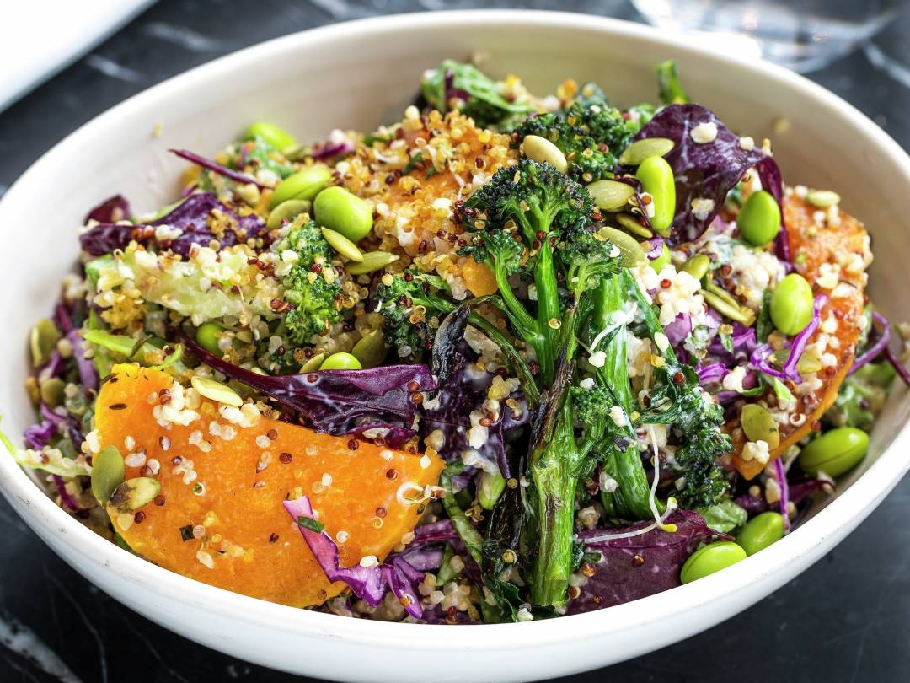

Here's a cheffy way to cook steak that really makes the most of a good steak. You'll feel like a total pro cooking it and it'll rival the best steakhouse in town!
Instruction
- Take the steak out of the fridge 30 minutes prior to bring to room temperature. Pat dry the steak with a paper towels.
- Heat oil in a heavy based skillet over high heat until it is very hot - you should see smoke!
- Sprinkle each side of the steak generously with salt and pepper, then immediately place in the skillet.
- Cook for 2 - 2.5 minutes until you get a great crust, then turn.
- Leave for 1 minute, then push steaks to one side and toss in butter, garlic and thyme. BE CAREFUL - the thyme will sputter!
- As soon as the butter is melted, continuously spoon the butter over the steak until it's cooked to your liking - 2 minutes in total for the 2nd side for medium rare (52C/125F, chart below for other doneness temps)
- Basting also renders fat on the side of the steak – use tongs to sear the edges at the end if you want it browned more.
- Transfer steak to a plate and cover loosely with foil, rest for 5 to 10 minutes. Ready!
Ingredients
Amount |
Ingredients |
|---|---|
| 1-2 | Boneless Ribeye or Scotch Fillet |
| 1 Teaspoon | Vegetable Oil |
| Some | Salt and Peper |
| 75g | Unsalted Butter |
| 3-6 Sprig | Fresh Thyme or Rosemary5 garlic cloves |
| 5 | Garlic Cloves |
It’s a real Japanese sushi roll with sushi rice wrapped with nori (seaweed) and stuffed with cooked imitation crab meat (or real crab meat), cucumber and avocado. Just delicious!
Instruction
- Rinse the sushi rice with cold water until the water becomes clear. Than cook the rice in an electric rice cooker.
- Mix the rice vinegar, sugar and salt together in a small bowl. Make sure the sugar is dissolved. Add the vinegar mixture to the rice, stir evenly.
- Chop the Crab Delights and mix with mayonnaise and lemon juice.
- Lay the bamboo mat on a flat surface and cover it with plastic wrap. Lay a small sheet of nori (3.75 inch x 8 inch) on the bottom part.
- Using a spoon, scoop the rice onto the seaweed and distribute it evenly in a thin layer. Use the back of the spoon to press and flatten the surface of the rice.
- Sprinkle some toasted sesame seeds on top of the rice and use the back of the spoon to press the sesame onto the rice.
- Turn the seaweed over. Arrange 4 strips of cucumber and 2 strips of avocado, follow by the crab. Make sure you don't overfill. Roll the California Roll using the bamboo mat and make sure that you tug the sushi rolls very tight.
- Cut both ends of the sushi rolls using a sharp knife, about 1/2 inch off each end. Ready!
Ingredients
Amount |
Ingredients |
|---|---|
| 300 g | Sushi Rice |
| A bundle | Nori or toasted seaweed |
| 2 Packages | Imitation crab meat that comes in sticks or chunks |
| 200g | Fresh cucumber |
| 2 | Avocado |

Full of great veggies and high-fibre quinoa, this easy-to-make salad is nutritious, delicious and super-satisfying. Top with juicy pomegranate seeds for a great burst of flavour. You will be enchanted!
Instruction
- Scrub and chop the sweet potatoes into 2.5cm chunks. Place into a roasting tray with the chilli flakes, ground coriander and cinnamon, a drizzle of olive oil and a little sea salt and black pepper, then toss well.
- Spread out into an even layer and place in the hot oven for 15 to 20 minutes, or until golden and crisp.
- Meanwhile, cook the quinoa in boiling salted water according to the packet instructions.
- Slice the broccoli into small florets, then halve and finely slice the stalk. Place into a heatproof colander and rest it over the quinoa pan. Cover and steam for 3 minutes, or until just tender
- Meanwhile, toast the nuts in a dry frying pan over a medium-high heat for 2 to 3 minutes, then transfer to a pestle and mortar and crush lightly
- Halve the pomegranate and squeeze half the juice into a large bowl. Add 3 times as much extra virgin olive oil, the lime juice and balsamic vinegar. Whisk well and season to taste.
- Add the cooled broccoli and sprouts to the dressing, then snip in the cress. Roughly chop the coriander (stalks and all), finely slice the chilli and add to the bowl along with the quinoa and sweet potato.
- Bash the reserved pomegranate half with a wooden spoon so the seeds come tumbling out and scatter these over the platter along with the nuts, snip the cress on top, then serve with the feta crumbled over the top.
Ingredients
Amount |
Ingredients |
|---|---|
| 600g | Sweet Potatoes |
| 1 Pinch Each | Chilly Flakes, Cinnemon, Coriander |
| 200g Each | Quinoa and Broccoli |
| 35g | Mixed Nuts |
| 20g | Feta Cheese |
| 0g | Virgin Olive Oil |
| 2 | Limes |

Try this delicious looking salmon when you are up for any quick and quick to ready seafood meal! Give it a try!
Instruction
- Take your filet of salmon, and roll it, skin side facing out. Place the retracted salmon filet on the cutting board, and score your skin layer crosswise about 50 % inch deep.
- Open each score and sprinkle salt to the cut (ouchie!). Gordon suggests it’s also possible to add Thyme, Rosemary, or Fresh Basil at this stage of the preparation.
- Heat much skillet over med heat, and add essential olive oil when the pan is hot.
- Add the salmon, skin side down, when the oil actually starts to lightly smoke. Keep your fingers on top from the salmon filet to get a bit to help keep it nice and flat.
- Remove the pan from heat, flip the salmon back to your skin layer side, and allow it to cook a minute.
- Now there is a wonderful, masterfully prepared filet of salmon. A festival for the palate!
Ingredients
Amount |
Ingredients |
|---|---|
| 9 | Salmon Filet |
| Some | Olive Oil |
| Some | Salt |
| Various Herbs | e.g. Thyme, Rosmary and Basil |